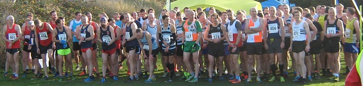

Darrell Smith was the star claiming a silver medal as 16 SAC runners contested the Kent Veterans Cross country Championships at Dartford on 2 December.
Sevenoaks fielded full teams in the M40, M50, M60 and W45 categories as well as two runners in the M70 event, which did not include a team race. The M50s were first up, running 9k, and after Tonbridge's Ben Reynolds separated early from the field, Darrell moved into second place and gradually consolidated his place until he had a gap of a minute over third place at the end. Darrell was backed up by Keith Dowson in 22nd and Tony Waldron in 49th to place SAC 6th in the team race.
The M60s, M70s and all the women's categories ran together in the second race over 5k. For the first time anyone can remember, Sevenoaks had a team in the W45s and they finished 7th, led by Heather Fitzmaurice in 13th, supported by Pauline Dalton in 19th and Grace Manzotti in 38th. The M60 team did slightly better with 4th place, thanks largely to James Graham finishing 6th, with Duncan Cochrane 24th, Simon Hallpike 32nd and Geoff Kitchener 34th. Both Jim Fitzmaurice and Richard Pitcairn-Knowles placed in the M70 category, with Jim 6th (2nd M75), and Richard 10th (1st M80).

The final race of the day was the 9k M40 event, in which Matthew Walker (43rd), Darius Sarshar (49th), Andrew Mead (51st) and Dan Witt (54th) packed impressively for 11th team. The full results are here.